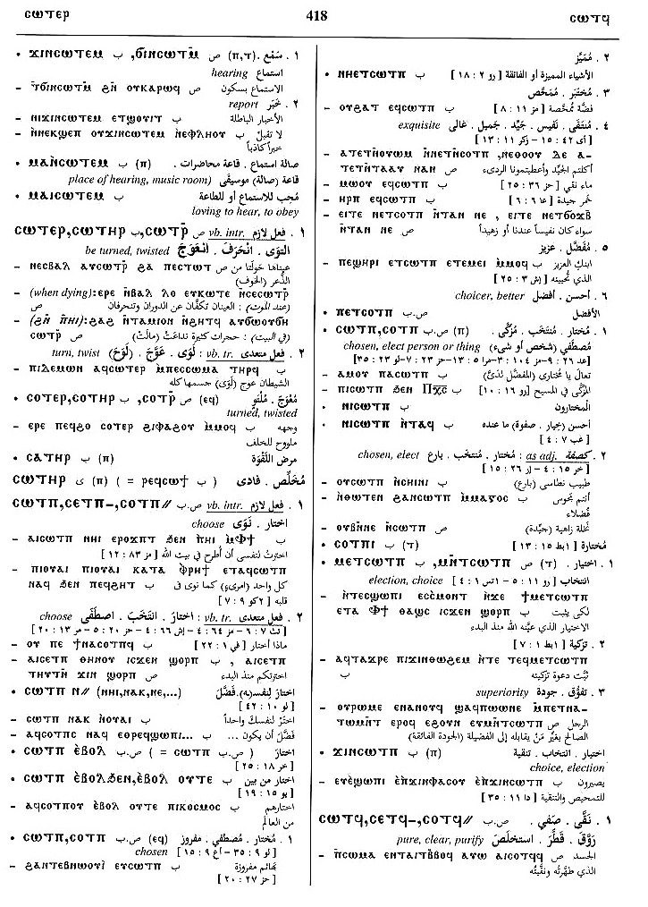

(verb)
intr: be pure, clear, purified [καθαροσ]
tr:
― purify, strain (?)
― cause to drip, pour
tr:
― purify, strain (?)
― cause to drip, pour
(S, B)
ⲥⲱⲧϥ
(F) ⲥⲱⲃⲧ
(S, B, F) ⲥⲉⲧϥ-
(S) ⲥⲱⲧϥ-
(S) ⲥⲟⲧϥ=
(S, B) ⲥⲟⲧϥ+
(A, sA) ⲥⲁⲧϥ+
(F) ⲥⲱⲃⲧ
(S, B, F) ⲥⲉⲧϥ-
(S) ⲥⲱⲧϥ-
(S) ⲥⲟⲧϥ=
(S, B) ⲥⲟⲧϥ+
(A, sA) ⲥⲁⲧϥ+
| (S) ― ⲉⲃⲟⲗ | intr: be purified,
separated
tr: purify, strain4766 |
Crum: 367a | |||||||
| ― ⲉⲡⲉⲥⲏⲧ | pour down4767 | ||||||||
| (S, sA, B) ― (ⲡ) | (noun male)
what is purified, purity2003 |
||||||||
| (S) ⲣⲉϥⲥ. | purifier2004 | ||||||||
See also:
| view | (B) ⲱϧⲧ (F) ⲱϩⲧ | (verb) intr: drip, trickle1838 |
| view | (S) ⲧⲗⲧⲗ (A) ⲧⲗⲧⲗⲉ (B) ⲧⲉⲗⲧⲉⲗ | (verb) intr: drip, let drop
[ρεειν, σταζειν]
as nn m B, dripping465 |
| view | (S) ϫⲟⲗϫⲗ, ϫⲟⲗϫⲉⲗ (Sf) ϫⲁⲗϫⲗ, ϫⲁⲗϫⲉⲗ | (verb) intr: let drip, drip701 |
| view | (S) ⲧⲗⲏ (B) ⲑⲗⲏ | (verb) intr: drip, let drop
tr: as nn1586 |
| view | (S) ⲧⲃⲃⲟ (A) ⲧⲃⲟⲩⲟ (sA, B) ⲧⲟⲩⲃⲟ (F) ⲧⲉⲃⲟ, ⲧⲉⲃⲃⲟ, ⲧⲉⲃⲁ, ⲧⲉⲃⲃⲁ, ⲧⲟⲩⲃⲁ | (verb) intr: become, be pure
(causative of ⲟⲩⲟⲡ) [καθαροσ ειναι, καθαριζεσθαι, καθαιρεσθαι]
qual: [καθαροσ] tr: make pure, purify [καθαριζειν]222 |
Crum: 366,367

366

367
Dawoud: 418b-419a

418

419